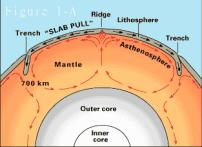
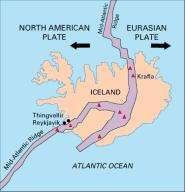
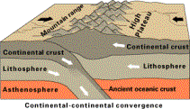

Article # 53
EARTHQUAKES: WEST COAST VS. EAST COAST


Taco Bell
A-2
Pat Jarrett
Earthquakes are one of the most common (hundreds occurring every day according to John Sumner) and most destructive natural disasters. They have destroyed huge cities before (earthquake of 1906 in San Francisco) and are very unpredictable. This is no warning with an earthquake as compared to a hurricane or other natural disaster...only a horrible aftermath. There have been many questions pondered upon for years by seismologists, and even they are unable to answer many of them. Our group was not given the task of solving an unanswered problem though. Our question is why earthquakes on the East Coast that have the same magnitude as those on the West Coast are much more damaging to a much larger area. From our research, we concluded that the three factors that most dramatically cause earthquakes on the East Coast to be more damaging than those on the West Coast are: preparation, structures, and geology. In order to gain an understanding of the research done in this atlas, one must first have a basic knowledge of earthquakes.
Earthquakes are
caused by the movement of the earth=s
tectonic plates, which are located beneath the earth=s crust.
These plates are always in motion, even though most of the time humans
are oblivious to this movement. The
most commonly accepted theory that explains why they move was developed by
Harry Hess. He stated that Athe slow movement of hot,
softened mantle that lies below the ridge plates@
(pubs.usgs.gov) causes the plates to shift. Figure 1-A is
shows
how the slow moving mantle pulls the tectonic plates into and away from each
other (pubs.usgs.gov). As a result of
being in constant motion, the plates sometimes collide and cause earthquakes. Earthquakes usually occur along plate
boundaries (edges where the plates meet or pull apart), but can occur in nearly
all areas. There are four types of
boundaries: divergent, convergent, transform
boundaries, and also plate boundary zones. Figure 1-B shows how divergent
boundaries tend to occur around spreading centers where plates are pushing
apart and new crust is formed by magma flowing up from the mantle. “It would be like two conveyor belts, both
facing each other but moving in opposite directions (pubs.usgs.gov). In convergent boundaries, plates
are moving toward each other.
In some instances, one plate sinks under
the other. Convergence can occur in
many ways, and an example of this is shown in figure 1-C (p. 6). Transform boundaries are the zone between two
plates sliding past one another. Most
of these are found on the ocean floor, but some occur on land. The San Andreas Fault is one such example
(figure 1-D). The final type of
boundary, a plate-boundary zone, is not as simple as the others. Plate-boundary zones have at least two large
plates and one or more smaller plates caught between them (pubs.usgs.gov). Earthquakes are measured by their intensity
and magnitude. Magnitude measures
source of the earthquake and determines the energy released. Intensity simply measures the strength of
shaking caused by the earthquake at a particular location. They are also measured on the Richter scale,
which ranges from 1 (least) to 12 (highest).
Now that a solid foundation of knowledge concerning earthquakes has been
set, we can begin to compare why East Coast earthquakes are more severe than
West Coast earthquakes.
One reason that the West Coast receives much less damage from earthquakes than does the East Coast is preparation. The United States has many seismology centers scattered throughout it (Assessing Earthquakes pp. 25-27). These centers study the earthquakes that happen in the United States and use the information that they obtain to harness a better understanding of these tremendous phenomenons. The seismologists can learn about the movement of the tectonic plates as well as pinpoint the epicenter of these earthquakes. This information allows them to provide cities with important information to help them prepare for earthquakes. The reason that this research helps the West Coast more than the East Coast is that there are many more earthquakes in the West Coast (Coffman pp. 1-3). Since there are many more earthquakes on the West Coast, there are many more centers to study earthquakes located in these areas. AAppoximately 40% of these centers are located in California and Nevada.@ (Assessing Earthquakes pp.25-27) The East Coast, on the other hand, has very few of these centers and does not receive near as accurate information. As a matter of fact, they have so few centers located in the Eastern United States, that it is difficult for the seismologists to report all the specifics of some earthquakes...such as where the epicenter is located exactly and some other exact technical information. Due to the lack of centers on the East Coast, the residents of these areas often have absolutely no warning, and this leads to many deaths that could have been prevented if there were more seismology centers located in the Eastern United States. This is one reason why the East Coast receives more damage from earthquakes than does the West Coast.
Another reason why earthquakes on the East Coast are more devastating than those on the West Coast are the structural advancements in the West Coast. Because the cities on the West Coast encounter earthquakes much more frequently than those on the East Coast, they have to adjust the structure of their buildings to avoid constant reconstruction (quake.wr.usgs.gov). Those cities on the East Coast experience so few earthquakes that it would be less expensive just to rebuild when an earthquake actually did happen. This is why an earthquake at a magnitude of 6.0 would not cause near as much structural damage in a West Coast city as it would an East Coast city.
The last and most influential factor that makes earthquakes more devastating on the East Coast is the geology of the land. The area affected by earthquakes depends mainly on the amount of rock within that area. The area west of the Rocky Mountains is composed of densely compacted rock. Most of the areas east of the Rocky Mountains contains more sediment and sand than rock (Sumner pp. 52-53). What this means is that an earthquake on the West Coast (even though it has an equal magnitude as one on the East Coast) will not affect near as much of the surrounding area as one on the East Coast. The dense rock will absorb the shock of the earthquake and therefore will not allow it to travel very far. On the East Coast, an earthquake of equal magnitude will affect much more of the surrounding area because there is not as much rock to absorb the shock...basically a jello effect. For example: Two earthquakes of similar magnitude were recorded, one in the St. Lawrence River region, and one in Pleasant Valley, Nevada. The earthquake that occurred in the St. Lawrence River region had a magnitude of 7.0 on the Richter Scale. This earthquake was felt in approximately 2 million square miles of land extending to AEastern Canada, south to Virginia, and west to the Mississippi River@ (Coffman 10). The earthquake in Nevada was a 7 and 3/4 on the Richter Scale, yet it only affected 500,000 square miles (Coffman 152). This earthquake, even though of larger magnitude, affected much less area and caused substantially less damage than the earthquake in the St. Lawrence region. This type of example can be shown repeatedly throughout history (Coffman pp.1-3).
In conclusion, our group discovered that earthquakes on the East Coast, even though they are of the same magnitude, are more devastating than those on the West Coast because of preparation, structural advancements, and geology. We also gained a much better general understanding of how earthquakes happen, and how man can attempt to deal with them.
Now we can go home and tell grandma all about earthquakes and why they are worse on the East Coast compared to the West Coast.